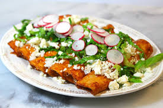

Delicious Dishes of Mexico
Mexican food is a flavorful fusion of indigenous and Spanish culinary traditions. Below are three iconic dishes that are must-tries for anyone visiting Mexico:
Tacos

Tacos are perhaps the most famous Mexican food worldwide. They consist of a soft or crispy tortilla filled with various ingredients such as grilled meats, seafood, or vegetables. Common taco fillings include beef, chicken, carnitas (slow-cooked pork), and fish. Tacos are often served with toppings like cilantro, onions, salsa, and a squeeze of lime.
Tacos originated in pre-Columbian Mexico with the Aztecs. The term "taco" was first used in the 19th century by Mexican silver miners. Tacos gained popularity in the U.S. in the early 20th century and have since become a global favorite.
Enchiladas

Enchiladas are corn tortillas stuffed with meat, cheese, or beans, then rolled up and smothered in a rich chili sauce. The dish is often topped with sour cream, cheese, and guacamole. It is typically baked in the oven until the sauce is bubbly and the cheese is melted. Enchiladas can be found in various regional versions, with different types of sauces and fillings.Enchiladas came from the time of the Aztecs in pre-Columbian Mexico. They practice rolling food in tortillas. it was documented as early as the 16th century by Spanish conquistadors. Originally, the Aztecs dipped corn tortillas in chili sauce and filled them with small fish or other simple ingredients.
todays modern enchilada, with different toppings, evolved over time and became a staple in Mexican cuisine.
Guacamole

Guacamole is a popular avocado-based dip made with mashed avocado, onions, cilantro, lime, and sometimes tomatoes or chili peppers. It’s a common accompaniment for tacos, nachos, and tortilla chips. The creamy texture and fresh flavor make guacamole a favorite in Mexican cuisine and across the world.Guacamole comes from the Aztec Empire in Mexico, around the 14th to 16th centuries. The Aztecs named it "āhuacamōlli," which in English it means "avocado sauce" in the Nahuatl language. The original recipe included mashed avocados, tomatoes, and chilies. After the Spanish arrived, ingredients like onions, lime juice, and cilantro were added, shaping the guacamole we know today.